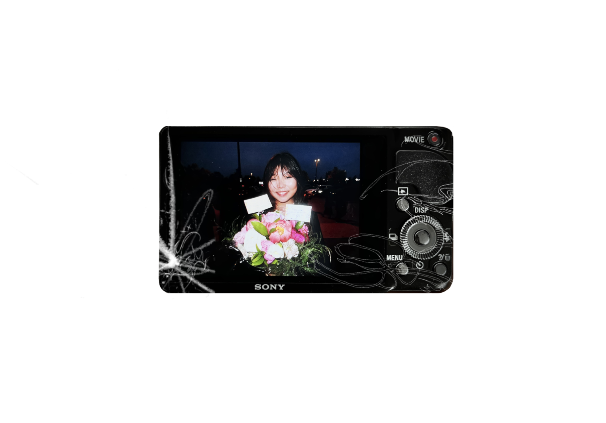

My name is Ellis Byun, I'm a second-year global business and digital arts major at the University of Waterloo. With a focus on graphic and UI design, I'm a creative who is passionate about producing work that reflects personality and vision. I aim to inspire and be constantly inspired.
This project showcases a visually engaging magazine that blends my passion for fashion with a deeply personal touch. Drawing inspiration from trends at the time, timeless style, and my own aesthetic, I crafted a publication that reflects my creative vision while connecting with the reader. The magazine offers a curated experience that highlights both my design style and my unique perspective on the world of aesthetics.
BoozeBuddy is a mobile app my team and I created to support young adults in developing safer drinking habits. Designed in Figma with an intuitive and engaging interface, the app addresses concerns about alcohol consumption by offering tools for education, tracking, and responsible decision-making. It includes features such as customizable drinking goals, a real-time location map to check in on friends, and notification reminders to help users pace themselves throughout the night. By blending practicality with a fun user experience, BoozeBuddy encourages mindful drinking and promotes a healthier, more responsible social culture.
This project explores my personal design identity through a series of 11" x 17" vertically oriented graphics. Blending illustration and typography, I created a digital self-portrait that reflects my taste, design principles, creative origin, goals, and stylistic influences. The work includes a design philosophy, and visual expressions of my strengths and aspirations—all crafted in Adobe Creative Suite with a focus on originality, clarity, and cohesive storytelling.